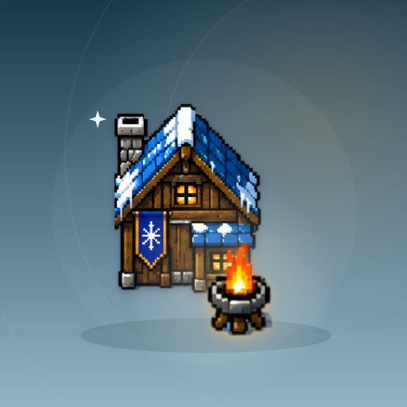

<- all projects

Last Hearth
PC
Volume
Live
Keep a small village alive through twenty winter nights.
Last Hearth is a winter survival strategy game about a small village and its fire. Each turn is one day: assign workers to timber, food, coal, research and a scouting team, improve buildings and balance heat, food and morale before you face the night. Send expeditions for timber, stores, coal or survivors, read a five-night weather outlook and build shelters, a kitchen, a workshop, a greenhouse, an infirmary and a hope beacon. Manage rations, sick workers, rescued travelers and village events across a twenty-night campaign or an endless winter, with three starting climates.